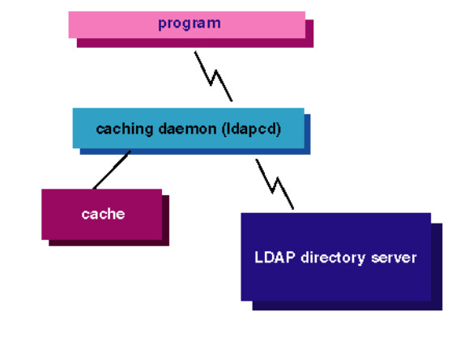

Cette section décrit comment installer et configurer un système Tru64 UNIX 5.1 en tant que client LDAP.
Pour installer le client LDAP, il faut installer le package optionnel LDAP Authentication (OSFLDPAUTH540). Il fait partie du système de base et est placé sur le CD-ROM d’installation du système d’exploitation.
Ce package contient entre autre :
ldapusers.deny et ldapusers.allow contient la liste des utilisateurs
définit dans l’annuaire LDAP autorisé ou non à se connecté sur le client LDAP.Des utilitaires LDAP sont disponibles avec le package LDAP Utilities (LDPUTILS100) du CD-ROM Associated Products, Volume 1. La commande setld permet de vérifier si ces packages sont déjà installés sur le système. Si ce n’est pas le cas, ils peuvent être installés de la même manière que le package OpenLDAP (voir section 2.3).
/usr/sbin/setld -i | grep LDP
LDPUTILS110 installed LDAP Client Utilities
OSFLDPAUTH540 installed LDAP Authentication (Network-Server/Communications)
Le système Tru64 utilise le démon ldapcd pour gérer les communications avec le serveur LDAP. Il permet d’optimiser les accès au serveur avec notamment l’établissement de plusieurs connexions LDAP et la mise cache des données. La figure 2.3 reprend ce principe.

Fig. 2.3 – Le démon ldapcd
Pour configurer le client LDAP (ldapcd), il faut modifier le fichier /etc/ldapcd.conf. Celui-ci est constitué d’entrées dont le format est <identifiant> :<valeur>. Les attributs pour lesquels il faut fournir une valeur sont repris dans l’exemple suivant et décris dans le tableau 2.5.
# configuration file for ldapcd
#
directory: 10.59.4.8
searchbase: "dc=inpres,dc=be"
port: 389
connections: 6
max_threads: 64
debug: 1
machine_dn:
machine_pass:
pw_cachesize: 2000
pw_expirecache: 120
gr_cachesize: 100
gr_expirecache: 600
| nom | description |
|---|---|
| directory | Nom ou adresse IP du serveur LDAP. |
| searchbase | Spécifie l’entrée racine de l’arborescence de l’annuaire où sont stockées les données utiles. |
| port | Numéro du port à utiliser pour contacter le serveur (389 par défaut). |
| connections | Nombre maximum de connexions gardées ouvertes par le démon ldapcd. |
| max_threads | Nombre maximum de threads maintenu par ldapcd. |
| machine_dn | Détermine le DN avec lequel le démon ldapcd se connecte au serveur. |
| machine_pass | Mot de passe utilisé par le démon pour se connecter au serveur. |
| xxx_cachesize xxx_expirecache | Ces paramètres déterminent le nombre d’entrées à conserver dans le cache et le temps maximum d’utilisation du cache avant son rafraîchissement. |
Tab. 2.5 – Attributs du fichier ldapcd.conf
Si aucun identifiant de connexion (paramètre machine_dn) n’est spécifié, le client ldapcd se connectera de façon anonyme au serveur.
Le binaire du démon ldapcd est installé sous le répertoire /usr/sbin/. Le script /sbin/init.d/ldapcd permet de lancer, arrêter ou redémarrer le processus.
usage: /sbin/init.d/ldapcd {start|stop|restart}
Si la valeur d’un attribut du fichier ldapcd.conf est modifiée, le démon ldapcd doit être relancé pour que les mises à jour soient prises en compte.
/sbin/init.d/ldapcd restart
Quand il est lancé pour la première fois, le démon ldapcd effectue plusieurs opérations.
/etc/sia/matrix.conf pour inclure le mécanisme de sécurité pour LDAP (voir section 3.4.1)./etc/inittab permettant de lancer automatiquement le démon au démarrage du système.La commandes ldap_check (sous le répertoire /usr/sbin/ldap/) fournie avec le paquetage LDAP utilities permet de tester la configuration du fichier /etc/ldapcd.conf.
Pour cela, la commande effectue quelques tests et affiche les résultats sur la console. L’exemple suivant montre l’affichage obtenu avec une configuration correcte du fichier ldapcd.conf.
Loaded Configuration file /etc/ldapcd.conf
Connected to LDAP server on 10.59.4.8
Search base "dc=inpres,dc=be" confirmed
Retrieved Object class information
Password object class attributes verified
Group object class attributes verified
Directory configuration verified